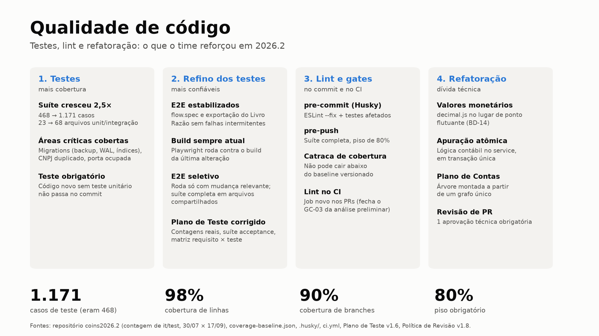
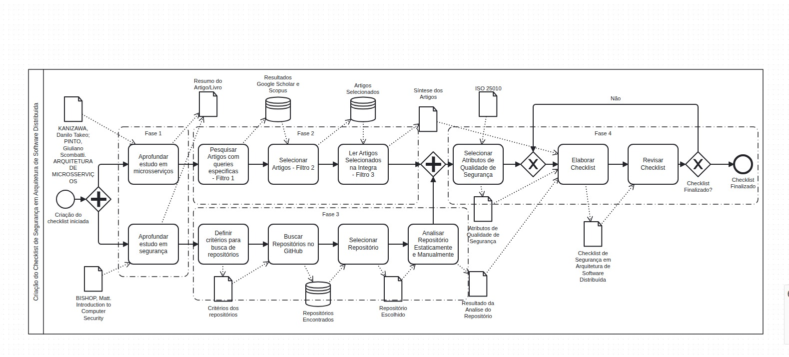

Desktop · UFMSNES · UFMS
COIN'S · sistema contábil desktop
COIN'S · desktop accounting system
Aplicação desktop offline para ensino de contabilidade, evoluída por equipes diferentes a cada semestre.
Offline desktop app for accounting education, evolved by a different team every semester.
QA & Desenvolvimento
QA & Development
Testes eram o maior gap do projeto. Estruturei a estratégia de qualidade com testes manuais e automatizados (unitários e E2E com Playwright) e implementei os módulos de DRE, Balanço Patrimonial e apuração de resultado com exportação em PDF.
Testing was the project's biggest gap. I set up the quality strategy with manual and automated tests (unit and E2E with Playwright) and built the income statement, balance sheet and closing modules with PDF export.
Gestão de Projeto & DevOps
Project Management & DevOps
Depois assumi a gestão do projeto (escopo, requisitos, estimativas, sprints e entrega à banca) e a frente de DevOps: pipeline de CI, build e deploy de produção.
I then took over project management (scope, requirements, estimates, sprints and final delivery) and DevOps: CI pipeline, builds and production deploys.
Meu papel
My role
QA→Dev→DevOps→Gerente de ProjetoProject Manager

Pesquisa · SegurançaUFMS
Checklist de segurança em arquitetura de microsserviços
Security checklist for microservices architecture
Problema
Problem
Times que adotam microsserviços não têm um instrumento prático para inspecionar a segurança da arquitetura.
Teams adopting microservices lack a practical instrument to inspect their architecture's security.
Método
Method
Revisão da literatura (Google Scholar e Scopus) em três filtros, análise estática e manual de repositórios open source de microsserviços, e mapeamento de atributos de segurança da ISO/IEC 25010 e 27000 (confidencialidade, integridade, autenticidade, não repúdio, resiliência, rastreabilidade). O checklist é avaliado com TAM (facilidade de uso e utilidade percebidas) e ISO/IEC 27001/27002 (completude e corretude dos controles).
Three-stage literature review (Google Scholar and Scopus), static and manual analysis of open source microservices repositories, and mapping of ISO/IEC 25010 and 27000 security attributes (confidentiality, integrity, authenticity, non-repudiation, resilience, traceability). The checklist is evaluated with TAM (perceived ease of use and usefulness) and ISO/IEC 27001/27002 (control coverage and correctness).
Meu papel
My role
Revisão da literaturaLiterature review→Análise de repositóriosRepository analysis→ChecklistChecklist→Avaliação TAM + ISOTAM + ISO evaluation
🌐
Voluntariado · Webpúblicopublic
Site do EduComp Brasil 2026
EduComp Brasil 2026 website
Trabalho voluntário para o Simpósio Brasileiro de Educação em Computação: atualização e manutenção do site oficial do evento (páginas, conteúdo e layout).
Volunteer work for the Brazilian Symposium on Computing Education: updating and maintaining the event's official website (pages, content and layout).
📁
Next.js🔒
PET Manager
Sistema de gestão de documentos e relatórios do PET Sistemas (UFMS).
Document and report management system for PET Sistemas (UFMS).
📚
Microservicespúblicopublic
Micro Livraria
Loja virtual em microsserviços com comunicação via gRPC.
Online bookstore built as microservices communicating over gRPC.
🍳
Full stackpúblicopublic
Cookbook
SPA em Vue com API REST em Java.
Vue SPA backed by a Java REST API.
🍽️
Desktoppúblicopublic
Virtual Management
App desktop de gestão operacional para restaurantes.
Desktop app for restaurant operations management.
🗓️
Desktop🔒
Manager Me
Planner multiprojeto com persistência local.
Multi-project planner with local persistence.
🕸️
Datapúblicopublic
Web Scraping
Coleta e tratamento de dados web em Python.
Web data collection and cleaning in Python.